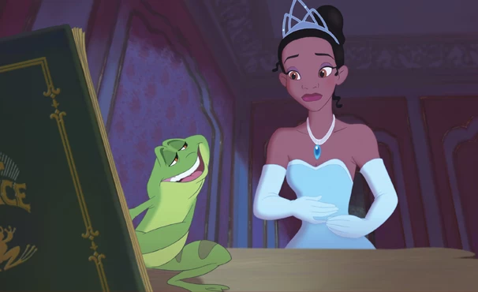

A série animada Tiana, um derivado de A Princesa e o Sapo, terá roteiro e direção principal de Joyce Sherri (Missa da Meia-Noite). Anteriormente, a série musical seria dirigida e escrita por Stella Meghie (Insecure). As informações são da Variety. Com planos de explorar novas histórias das princesas, a Disney dará o primeiro passo revisitando a Nova Orleans de Tiana. A série será uma comédia musical e mostrará a protagonista assumindo seu papel como princesa, além de novas facetas da sua icônica cidade natal. Originalmente, a série estava programada para estrear ainda em 2023, mas após as greves de roteiristas e de atores - ainda em andamento - o lançamento deve ficar para 2024.
